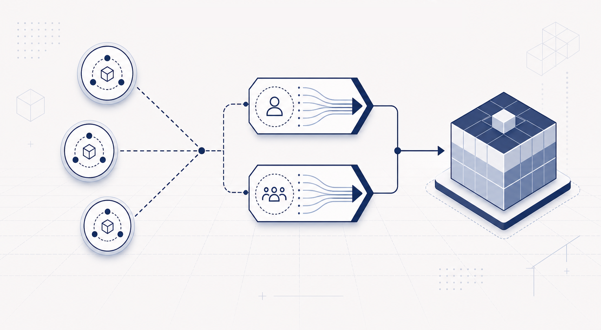

Post-Quantum Custody On-Chain: Signature-Agnostic Distributed Approval
June 15, 2026

A protocol-level post-quantum upgrade does not solve custody. Even if a chain adds PQ signatures, the custodian still has to preserve its own control model: who can approve, how quorum is enforced, how recovery works, what auditors can inspect, and what happens when one operator or key is compromised.
This distinction matters because MPC custody was never valuable only because it produced ECDSA signatures. It was valuable because it removed a single point of compromise from asset control while preserving an operational workflow institutions could use. Threshold ECDSA happened to be a convenient primitive that made this model compatible with existing chains, because it bundled distributed authorization and native signature production into one object.
The post-quantum transition breaks that bundle. Taurus stated the issue clearly in its June 2026 report, Quantum Computing Risk in Digital Asset Custody: HSM vs. MPC: MPC custody faces a structural disadvantage when the market moves beyond elliptic-curve signatures.
For the market-level version of the problem, see our companion analysis, The Post-Quantum Institutional MPC Custody Crisis 2026.
The short version is that the most conservative post-quantum signature families, including SLH-DSA/SPHINCS+ and LMS/HSS, are not naturally threshold-signable like ECDSA. For hash-based signatures, the MPTS work of Kondi, Kumar, and Vanegas Black-Box Threshold Signing of Hash-Based Signatures is Expensive, points to a deeper black-box barrier. Making these schemes work inside MPC means evaluating a large hash-based signing computation inside a distributed protocol practically blocking the product migration path for a regulated custodian.
The mistake is to treat this as a search for "the post-quantum threshold signature." The custody problem is broader and more specific: how can a custodian preserve distributed approval without making its control layer depend on a threshold protocol for every signature scheme?
The Wrong Abstraction
Custodians sell a control model:
- withdrawals require multiple independent approvals;
- mint and burn operations cannot be triggered by one compromised operator;
- recovery and key rotation are auditable;
- policy changes follow the same approval discipline as asset movement;
- clients and regulators can inspect who approved what.
Today, that control model often happens to be implemented through threshold ECDSA. That does not mean custody is identical to threshold signing, only that threshold signing has been a convenient implementation layer for a higher-level custody function.
Once the signature primitive changes, the distinction becomes important. If the industry treats post-quantum custody as "build native TSS for every signature scheme," custody migration becomes a bottleneck and, for hash-based signatures, may be aiming at the wrong target. If it simply collects large post-quantum signatures and counts them, it gets a multisig, losing the MPC custody programmability.
The better abstraction is custody-level authorization. Members authenticate themselves with whatever signature scheme the deployment chooses. Threshold authorization is enforced separately, as a signature-agnostic rule.
The Dual-Gate Shape
EternaX built the dual-gate model separating the two jobs that threshold ECDSA used to bundle.
Gate 1 asks whether registered custody members approved the operation. Each member signs an approval envelope with the selected member-authentication scheme, for example the conservative SLH-DSA.
Gate 2 asks whether enough custody members authorized the same operation. A separate threshold authorization layer verifies that a quorum contributed valid authorization shares for the same message, policy, nonce, and custody action.
Funds move only when both gates pass.
This is not a threshold SLH-DSA signature and not an attempt to make hash-based signatures behave like elliptic curves. It is a different boundary: keep signatures for member authentication, and move threshold authorization into an enforcement layer that is independent of the signature scheme.
On a post-quantum-native EternaX rail, both gates are consensus validity rules. On existing ecosystems, the same authorization shape can be enforced wherever the asset-control path can run programmable verification logic: smart-contract wallets, vaults, stablecoin issuer modules, bridge controllers, account-abstraction smart accounts, or an HSM guarding a master key.
Where It Matters
The target use cases are high-value operations where custody policy already matters more than transaction size:
- stablecoin mint and burn authorization;
- tokenized treasury and fund movements;
- institutional vault withdrawals;
- bridge and settlement-venue admin controls;
- custody-set rotation, key rotation, and policy changes;
- post-quantum account control for assets issued on a PQ-native rail.
These are the workflows where a custodian can afford stronger admission-time checks but cannot afford to lose distributed approval.
For a stablecoin issuer, mint authority should not collapse back to one hardware boundary just because the signature layer changes. For a tokenized fund, treasury movement should keep the same quorum discipline clients already expect. For a custodian, recovery, rotation, and policy updates should remain normal custody operations.
Beyond Multisig: Second Factor, Agility, HSMs
A plain t-of-n post-quantum multisig is easy to understand: collect enough signatures and count them. That may be sufficient for some products, but institutional custody usually needs more than a count: shares, refresh, policy-bound approvals, transcript roots, evidence retention, and a verifier that can accept an operation without ever holding custody material.
The dual-gate design keeps that shape and adds a second authorization factor a signature count cannot offer. Member signatures provide attribution; the threshold gate provides distributed authorization from separate share material with information-theoretic below-threshold secrecy. In multisig, compromising t signing keys is total compromise. In the dual gate, an adversary holding t stolen member keys still passes only the signature count and cannot produce the authorization seal, a below-threshold set cannot move funds, and validators or contract verifiers never become custodians.
The member-signature scheme appears only in Gate 1, so it is a deployment parameter, not a protocol parameter. Migrating a member from ECDSA to SLH-DSA or ML-DSA is a key rotation: register the new public key, retire the old. The threshold layer, policy engine, and audit pipeline are untouched, and mixed-scheme quorums allow a staged migration without a flag day. Compare that with changing the signature scheme under a threshold signature protocol, which means a new distributed key generation, a new presignature lifecycle, a new combination algorithm, and a new security analysis.
The same property makes the construction compose with HSM custody rather than compete with it:
- Member keys in commodity HSMs. The protocol requires only an ordinary signature over the approval envelope, so any device exposing a standard sign API participates directly. As vendor firmware ships FIPS 204/205 support, HSM-resident post-quantum member keys work without protocol changes. Threshold signing cannot say the same: each member's contribution there is a scheme-specific partial-signature computation that commodity HSM firmware does not implement.
- The HSM as enforcement layer. The enforcement layer needs signature verification, field arithmetic, and a hash, but no secret key material, so it can itself be an HSM-hosted policy module.
- Master-key custody. Production dual-control stacks already keep an asset master key inside one HSM, unlocked when a rule engine counts enough approver signatures. There, the HSM is the enforcement layer: it checks both gates and releases the master-key signature only when the threshold seal verifies. That upgrades the unlock condition from "count t approver signatures" to the two-factor quorum above, and the output is a native signature, recovering drop-in compatibility with legacy chains at the cost of the master key's hardware trust anchor.
The practical consequence for the HSM-versus-MPC framing: distributed t-of-n authorization with below-threshold secrecy no longer requires giving up HSM-resident, standardized signature keys.
Rail, Not Custodian
EternaX is not a custodian and does not presently intend to become one. Custodians still run the regulated custody business: onboarding, policy engines, recovery, approvals, audits, client reporting, and compliance.
The rail gives those custodians an enforcement surface where their distributed approval model can survive the post-quantum transition.
The cleanest deployment is native EternaX custody enforcement, where post-quantum member authentication and threshold authorization are part of block validity. A custody operation that fails either gate is invalid.
The same construction deploys on Ethereum and similar ecosystems today through a smart-account or account-abstraction path. It is not a transparent retrofit onto arbitrary existing EOAs or Bitcoin scripts; it applies where an asset's control path can be moved into an enforcement layer that checks both gates: a vault, issuer module, bridge controller, token-control contract, smart account, or an HSM guarding a master key. Gate 2 is naturally contract-shaped and cheap: field arithmetic, hashing, share checks, and reconstruction. Gate 1 means verifying post-quantum member signatures in-contract until signature precompiles ship, so gas cost and signature size are the practical boundary. That buys cryptographic agility — the custody authorization layer becomes post-quantum ready ahead of, and independently of, the chain's own signature migration — but not full post-quantum safety: native transaction signatures and the keys controlling contract upgrades or account recovery remain classical until the host chain completes its own transition.
The Practical Consequence
The HSM-versus-MPC debate can make post-quantum custody sound like a forced choice: centralize around hardware, or rebuild MPC custody around a new threshold protocol for each signature primitive.
Dual-gate custody gives a third path. Use conservative post-quantum signatures to authenticate custody members, from HSM-resident keys if that is the operating model. Use a separate, signature-agnostic threshold authorization gate to preserve distributed control. Put the check where assets actually move: the rail, vault, issuer module, bridge controller, smart account, or the HSM that holds the master key.
This is the practical consequence: custodians can keep the approval model their clients bought while moving toward post-quantum security, without pretending hash-based signatures are threshold ECDSA and without tying custody architecture to one signature scheme.
We are looking for custody, HSM, MPC, issuer, and bridge teams to pressure-test the workflow: approval UX, evidence retention, audit requirements, policy rotation, and the minimum setup profile acceptable for regulated operations. If you need post-quantum custody without giving up distributed authorization, we should talk.
Connect: info@eternax.ai
EternaX is a high-performance, post-quantum cryptography (PQC) native settlement rail built to become the default home for minting new dollars onchain: stablecoins, tokenized treasuries, and tokenized RWAs. The issuer reality is simple: mint on legacy ECDSA and EdDSA rails and you embed migration debt that gets called under stress through selective key compromise, depegs, collateral haircuts, and liquidity fragmentation. EternaX's wedge is PQ-native authorization from day one with a novel post-quantum signature design that is engineered for market throughput and delivers signatures about 4x smaller than next best at >50 000 TPS, avoiding the throughput and ecosystem coordination cliffs of retrofit PQC. With auditable privacy, sub-second finality targets, prediction markets live, and spot plus perps next, EternaX unifies issuance and market venues on one PQ-secured rail.